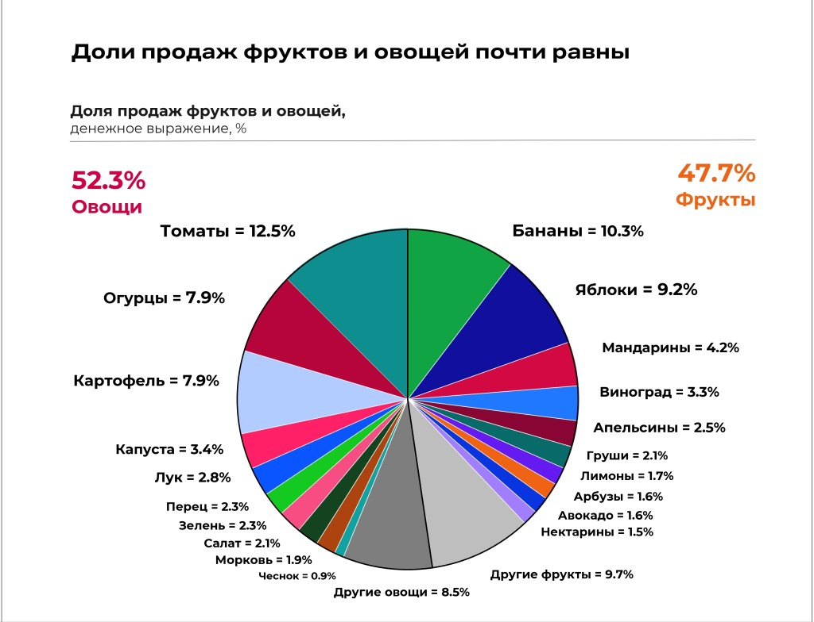

Индустрия фруктов и овощей не просто остается одной из важнейших на продовольственном рынке, так как овощи и фрукты входят в базовую потребительскую корзину, но и потому, что их ассортимент напрямую влияет на выбор магазина для FMCG-шопинга: почти половина покупателей (46%) признаются, что именно свежие фрукты и овощи определяют выбор магазина, уступая место только категории свежего мяса и птицы (52%). И в условиях, когда количество посещаемых покупателями торговых точек с каждым годом увеличивается, а уровень лояльности находится едва ли не на историческом минимуме, грамотное управление такой товарной группой может стать вопросом «выживаемости» торговой точки.

Статистика продаж нашего магазина за - 2024 год